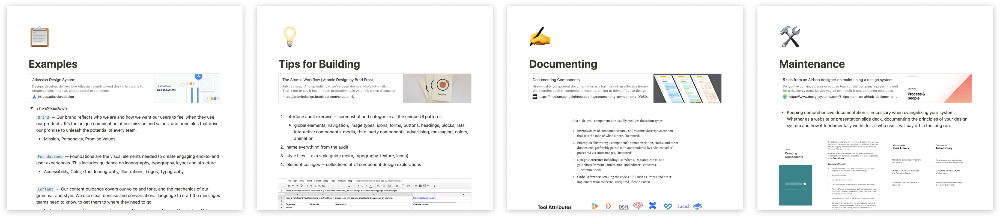
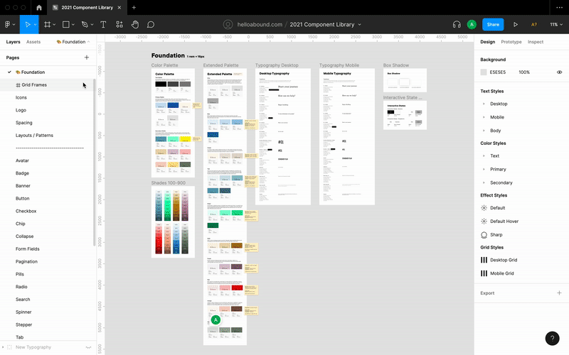
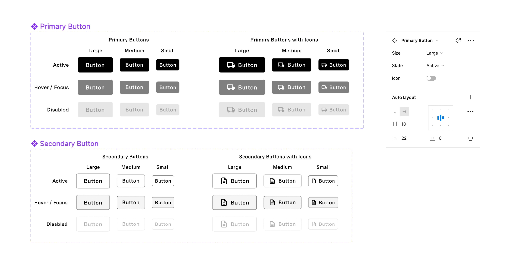
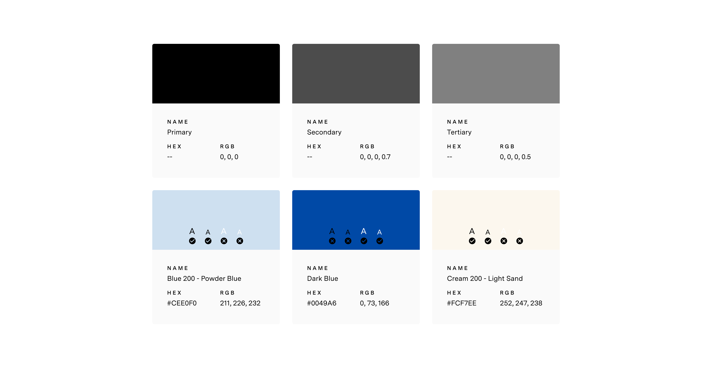
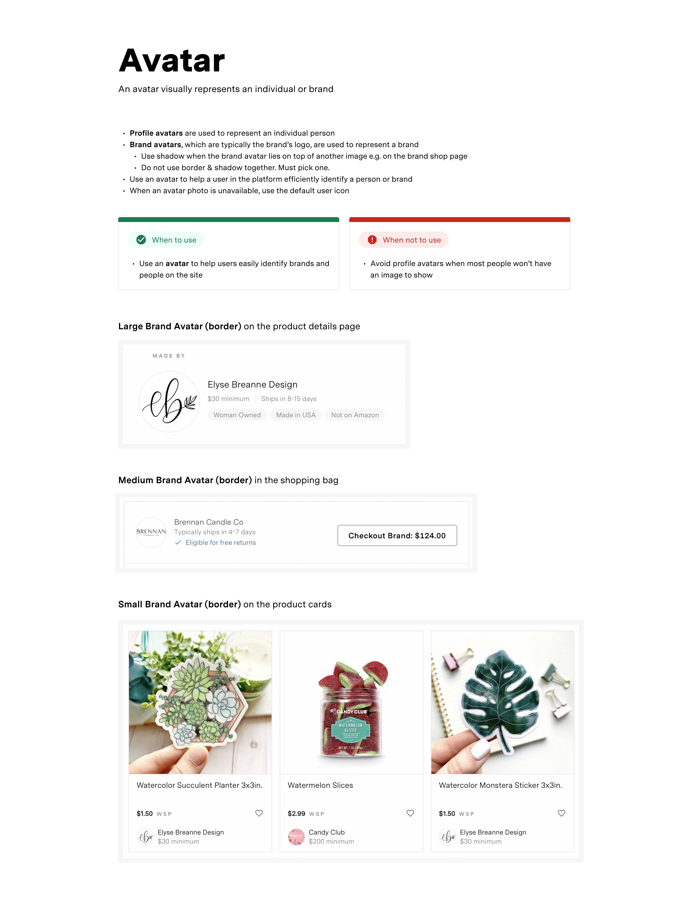

Background
When I first joined Abound, they had a barebone foundation for a design
system consisting of typography, colors, and a few components. However,
they had no actual documentation of this design system to act as a
source-of-truth & facilitate knowledge sharing across the company.
To allow the design team to continue working fast & maintain consistency
as our company grew, I was tasked with building our design system! Some of
my goals were:
- Document all component variations
- Provide usage guidelines for each component
- Improve accessibility of existing components as needed
Building the design system
Research
I had never created a design system before, so I started this project with some research:
- I explored various companies' design systems, such as Atlassian's design system, IBM's Carbon, and Google's Material Design
- I read articles and blog posts about how companies, such as Instacart and Airbnb, built & maintain their design systems
- As suggested by my manager, I looked at the atomic design principles that Brad Frost outlines

Documented my research in Notion
Interface Audit
I went through our site & screenshotted all the components and patterns
we were utilizing. When I shared this audit with the design team, I brought
up inconsistencies we should mend & discussed component use cases and how
we might consolidate the number of stylings/variations we were using
(because we were using a lot 👀)

The Component Library
Based on my initial exploration of other design systems, I decided to put
each component on a separate page in Figma. This organization makes it easy
for other designers to find the components they need & reduces clutter on pages.

Variable Components
The bulk of my time for this project went to making the actual components
in Figma. I created 25 components ranging from simple ones, such as avatars,
buttons, and pills, to more complex ones like cards and modals. And for
each component, I included all their variations (size, shadow, state, etc.)
I also utilized auto layout whenever I could so they'd be as responsive as
possible to make it easier for the design team when creating mockups.

Accessbility
A big priority for me when building this design system was accessibility.
I wanted to make sure that each element in our design system considered
all of our users. So designing with close attention to WCAG standards, I was able
to build components that were highly accessible & maintained Abound's branding.

Usage Guidelines
For each component, I included a definition, types, styles, when to use &
when not to use, and screenshot examples for desktop and mobile.
